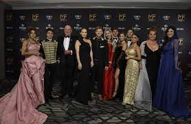

El furioso mensaje de Alexis Quiroga cuando le dieron el Oro a Gran Hermano
El mediático no estuvo presente en la gran fiesta de la televisión que se emitió por la pantalla de Telefe.
“Por más que no nos nombraron, acá está el team que hizo ganar el Martín Fierro de Oro. Los 20 de esta edición 2022/2023″,
escribió el Conejo junto a una imagen de los 18 participantes que ingresaron en la casa de Gran Hermano.

En el Día de la Independencia, APTRA celebró una nueva entrega de premios Martín Fierro, cuya ceremonia se transmitió por la
pantalla de Telefe, con la conducción de Santiago del Moro. Durante la noche, además de la clásica entrega de estatuillas,
hubo todo tipo de homenajes y reconocimientos a figuras del espectáculo.
Durante la gala, Gran Hermano, el ciclo más exitoso de Telefe en 2022, ganó en la categoría mejor reality. Además,
Del Moro también fue distinguido por su labor en la conducción del ciclo y de Masterchef. La noche culminó con la entrega
del Martín Fierro de Oro a Gran Hermano, pese a que hubo un pedido unánime durante toda la ceremonia: que regrese la ficción
nacional a la televisión.
En la ceremonia estaban presentes algunos de los participantes del reality, como Walter Alfa Santiago y los cuatro integrantes
del ciclo Fuera de joda, Julieta Poggio, Nacho Castañares, Daniela Celis y Lucila La Tora Villar. Ellos estuvieron a cargo de
participar de la previa de la transmisión desde el Streaming Room instalado especialmente en el Hilton.
Pero muchos integrantes de GH quedaron fuera de la gala, como Alexis Quiroga, quien vio la premiación desde su casa y cuando se
enteró de que el ciclo había ganado el máximo galardón publicó un mensaje contundente en sus redes sociales. Unos minutos más
tarde, se arrepintió y lo borró.
Por otra parte, desde que Alexis salió del reality estuvo en el centro de la escena mediática, primero por su intensa relación
con Coti Romero y, después, por inesperada su ruptura. Y, aunque el principio se mostraba muy angustiado por su separación de la
correntina, la realidad es que con el correr de los días el Conejo lució mucho más repuesto.
E, incluso, dispuesto a conocer personas nuevas.
Lo cierto es que, invitado a Polémica en el Bar, el cordobés participó de un debate sobre las primeras citas,
si es el caballero el que debe invitar o si la cuenta hay que pagarla a medias y otras cuestiones referidas a las relaciones en
los tiempos que corren. Hasta que, en un momento, el muchacho de 29 años reveló una increíble propuesta que le llegó por parte de
una mujer de 48.
“Yo tengo un mail de contacto y me llega uno que decía el nombre de la persona, Ana, su edad y el lugar donde vive. Me ofrecía,
a cambio de formar una familia con ella, capital y bienes”, comenzó diciendo el hermanito. ¿Con qué patrimonio contaba la mujer
en cuestión? “Ella tenía una fábrica, tenía campos y otras cosas. A cambio de que todo eso fuera mío, en el lapso de mi vida,
tenía que tener una familia con ella”, explicó el Conejo.
En ese momento y a modo de broma, Marcela Tinayre comentó:
“¿Sabés una cosa? La conozco”. Y, dando a entender que ahora que está soltero podría analizar nuevamente la situación,
el joven le siguió al juego a la conductor del ciclo de América y retrucó: “¿Si? Bueno, preguntale si todavía la propuesta está en pie”.